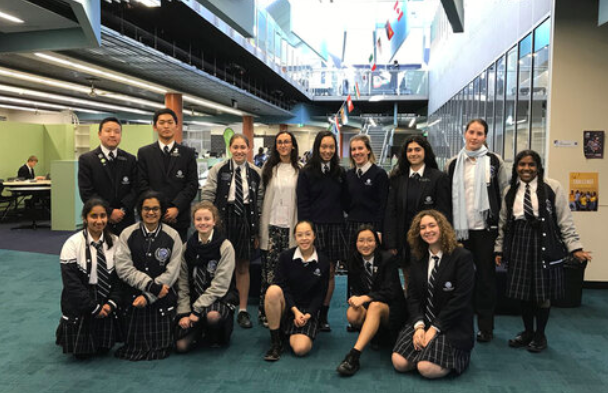

JMSS was chosen as the first Australian ambassador school for Plastic Oceans Australasia in 2018 to be part of their education program. It started with a small group of enthusiastic students who wanted to make a difference and with the help and leadership of Steph, began their work on making John Monash Science School a more sustainable and conscious community.
So what are our goals exactly? Well, our original mission was to phase out plastics at our school, however, as time went on, the JMSS Plastic Oceans team has become so much more than that. We now work with the school community to tackle systemic issues with single-use plastics, we hold events and programs to raise awareness of the serious environmental threats facing our planet as well as join forces with other schools and organisations. And while the change that we may only be fighting for local change, it’s the small contributions that make up the big picture.
Starting out with only a few people in 2018, our community has now expanded to include over 60 members from all different year levels. Being a student-run organisation, we have 3 sub-teams: Media and PR who are in charge of spreading our message whether its around the school or on social media, Events and Fundraising who work to organise various events around the school to better inform and engage the school community in the fight against plastic pollution and Internal Affairs who are in charge of identifying and tackling systematic consumption of single-use plastics in the community. Each group is led by passionate student leaders who are the driving force behind this organisation.
While this year has been very challenging for everybody, we have worked together to find creative ways to overcome these obstacles. For example, we held a school-wide Kahoot during online assembly to inform students of recycling practices in our state as well as facts about plastic pollution. We’ve also increased our social media presence to ensure we spread the message to the wider community. Which I guess brings us to this webinar that will hopefully help others better understand Plastic Oceans is all about.